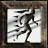
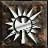

Bárbaro
El bárbaro es una de las cinco clases iniciales de Diablo II. Es un personaje basado casi totalmente en el cuerpo a cuerpo, el único del juego capaz de manejar un arma melé a dos manos a la vez que un escudo o, incluso, de empuñar dos armas cuerpo a cuerpo simultáneamente. Posee una gran fuerza y aguante dado que luchará en primera línea la mayor parte del tiempo, aunque también puede apoyar al resto del grupo con sus gritos de guerra.
Historia
 Se cuenta que
cuando el
mundo era aún muy
joven, se encomendó a las tribus de las Estepas del
Norte
una responsabilidad sagrada. En lo más profundo del gran monte Arreat, se halla una fuente
de
inmenso poder, crucial para el bienestar de toda la humanidad. Las tribus actuaban como
guardianes
de esa fuente y su estilo de vida gira alrededor de este deber sagrado.
Se cuenta que
cuando el
mundo era aún muy
joven, se encomendó a las tribus de las Estepas del
Norte
una responsabilidad sagrada. En lo más profundo del gran monte Arreat, se halla una fuente
de
inmenso poder, crucial para el bienestar de toda la humanidad. Las tribus actuaban como
guardianes
de esa fuente y su estilo de vida gira alrededor de este deber sagrado.
Envuelto en un halo de misterio y tradición, este pueblo se refiere a sí mismo como los “Hijos de Bul-Kathos”, el gran rey de la antigüedad. Para proteger sus tierras de las fuerzas exteriores, llevan un estilo de vida nómada y se trasladan frecuentemente dentro de los confines de las estepas, manteniendo pocos asentamientos permanentes. Al aislarse del mundo que se encuentra más allá de sus territorios, evitan el uso de magia y maquinaria compleja, puesto que creen que esas cosas sólo pueden debilitar la resolución desarrollada a lo largo de muchos años.
Los Hijos de Bul-Kathos han desarrollado un vínculo muy estrecho con la tierra, y han aprendido a aprovechar las materias primas de la naturaleza para mejorar su propia habilidad física sustancial. Por ello, y por su independencia de los atavíos del mundo exterior, los Reinos del Oeste se han referido históricamente a estas tribus como “bárbaros”, un calificativo que contradice la rica historia cultural y espiritual que este pueblo posee en realidad. Aunque algunos comercian con este curioso pueblo, sólo lo hacen a lo largo de las fronteras más alejadas de sus tierras. Están prohibidas todas las intrusiones al territorio alrededor del monte Arreat y los guerreros de las tribus del norte están siempre preparados para reprimirlas. Cualquier intento de conquista se ha encontrado siempre con una resistencia feroz y decidida.
Un relato de las escaramuzas cuenta cómo hordas de bárbaros aparecieron furtivamente donde tan sólo un instante antes no había nadie. Los bárbaros llevaban el cuerpo pintado con extraños dibujos y aullaban como los fieros vientos de las montañas al mismo tiempo que descendían sobre los invasores. La mitad del ejercito trasgresor tiró al momento sus armas y huyó despavorido. La otra mitad sufrió la ofensiva de los norteños, ofensiva cargada de un ímpetu que ninguno de los invasores curtidos por la guerra había presenciado jamás. No se pidió clemencia. Tampoco se tuvo compasión. Sin embargo, al final, cuando los extranjeros tocaron retirada, los bárbaros no fueron a su caza... al menos nadie vio que lo hicieran.
Resulta curioso que hace poco, desde que se difundieron las noticias del resurgimiento de Diablo, un reducido número de guerreros bárbaros ha sido visto errando fuera de los confines de las Estepas, preparados para la guerra y en busca de noticias sobre los Males Fundamentales.
Habilidades
Gritos de Guerra
Dominios de Combate
- Dominio de la Espada: incrementa el índice de ataque y el daño realizado con espadas.
- Dominio del Hacha: incrementa el índice de ataque y el daño realizado con hachas.
- Dominio de la Maza: incrementa el índice de ataque y el daño realizado con mazas.
 Dominio del Brazo de Guerra: incrementa el índice de ataque y el
daño realizado
con
brazos de guerra.
Dominio del Brazo de Guerra: incrementa el índice de ataque y el
daño realizado
con
brazos de guerra.- Dominio del Lanzamiento:incrementa el índice de ataque y el daño realizado con armas arrojadizas.
- Dominio de la Lanza: incrementa el índice de ataque y el daño realizado con lanzas.
- Resistencia Aumentada: incrementa la resistencia máxima del Bárbaro.
- Velocidad Aumentada: incrementa la velocidad de carrera del Bárbaro.
- Piel de Hierro: incrementa la defensa del Bárbaro.
- Resistencia Natural: incrementa las resistencias elementales del Bárbaro.
Habilidades de Combate
Objetos exclusivos
En la expansión Diablo II: Lord of Destruction se introdujeron objetos exclusivos para cada una de las clases. En el caso del Bárbaro, se incluyeron una serie de Yelmos especialmente diseñados para esta clase:
- Normal: El Gorro Mandíbula, El Yelmo Canino, El Yelmo Astado, El Casco de Asalto, El Guardia Vengador.
- Excepcional: El Visor Mandíbula, El Yelmo León, La Máscara Furia, El Casco Despiadado, El Guardia Criminal.
- Élite: El Yelmo de la Matanza, El Visor Furia, El Yelmo Destructor, La Corona del Conquistador, La Corona Guardiana.

 Las amazonas son
mujeres
guerreras que
provienen
de un grupo de islas de los Mares Gemelos,
cerca
de
la frontera con el Gran Oceano. Solo la cumbre permanentemente cubierta de nieve del Monte
Karcheus
rompe el paisaje uniforme formado por las selvas de árboles frondosos de las islas.
Las amazonas son
mujeres
guerreras que
provienen
de un grupo de islas de los Mares Gemelos,
cerca
de
la frontera con el Gran Oceano. Solo la cumbre permanentemente cubierta de nieve del Monte
Karcheus
rompe el paisaje uniforme formado por las selvas de árboles frondosos de las islas. Jabalina Venenosa: Conjura con magia una jabalina para dejar un
rastro de
nubes
venenosas.
Jabalina Venenosa: Conjura con magia una jabalina para dejar un
rastro de
nubes
venenosas. Evitar: Pasivo - Tienes la posibilidad de esquivar los misiles
enemigos
cuando
estas
atacando o parado.
Evitar: Pasivo - Tienes la posibilidad de esquivar los misiles
enemigos
cuando
estas
atacando o parado. A mediados del
siglo XII,
después de que la
Iglesia de Zakarum hubiera alcanzado una posición
prominente en el Este, la Iglesia decretó que las visiones de Akarat se difundieran por el
mundo
conocido con el fin de redimir a las masas. De esta forma, la Iglesia seleccionó a un grupo
de
sacerdotes entre los más carismáticos y devotos, y les encomendó la misión de convertir a
las
gentes
el Oeste.
A mediados del
siglo XII,
después de que la
Iglesia de Zakarum hubiera alcanzado una posición
prominente en el Este, la Iglesia decretó que las visiones de Akarat se difundieran por el
mundo
conocido con el fin de redimir a las masas. De esta forma, la Iglesia seleccionó a un grupo
de
sacerdotes entre los más carismáticos y devotos, y les encomendó la misión de convertir a
las
gentes
el Oeste.  Puño de los Cielos: El relampago azota al objetivo porque los
rayos sagrados
van
en
busca
de los enemigos cercanos.
Puño de los Cielos: El relampago azota al objetivo porque los
rayos sagrados
van
en
busca
de los enemigos cercanos.
 Vigor: Cuando esta activa, el aura aumenta la velocidad de
recuperación de
resistencia,
la resistencia máxima, y la velocidad de movimiento para ti y tu equipo.
Vigor: Cuando esta activa, el aura aumenta la velocidad de
recuperación de
resistencia,
la resistencia máxima, y la velocidad de movimiento para ti y tu equipo. Concentracion: Cuando esta activa, el aura aumenta el daño y
reduce la
posibilidad de
que
el ataque sea interrumpido por ti y tu equipo
Concentracion: Cuando esta activa, el aura aumenta el daño y
reduce la
posibilidad de
que
el ataque sea interrumpido por ti y tu equipo Conviccion: Reduce la defensa y la resistencia de todos los
enemigos.
Conviccion: Reduce la defensa y la resistencia de todos los
enemigos. El clan de magas
de
Zann Esu es uno de los
más
veteranos de los clanes antiguos, aunque poco se
sabe de él hoy en día. Hace siglos, los catorce poderosos clanes de brujas de Esu se
reunieron
por primera vez desde hacía generaciones. Lo que discutieron no se conoce, pero las brujas
abandonaron su estilo de vida anterior y, como grupo, desaparecieron en las selvas del Este.
El clan de magas
de
Zann Esu es uno de los
más
veteranos de los clanes antiguos, aunque poco se
sabe de él hoy en día. Hace siglos, los catorce poderosos clanes de brujas de Esu se
reunieron
por primera vez desde hacía generaciones. Lo que discutieron no se conoce, pero las brujas
abandonaron su estilo de vida anterior y, como grupo, desaparecieron en las selvas del Este.
 Bola de Fuego: Crea una esfera explosiva de muerte por abrasión
que rodea a
tus
enemigos.
Bola de Fuego: Crea una esfera explosiva de muerte por abrasión
que rodea a
tus
enemigos. Tormenta Atronadora: Invoca una tormenta mortal que azota a tus
enemigos con
rayos.
Tormenta Atronadora: Invoca una tormenta mortal que azota a tus
enemigos con
rayos.
 En el tercer
siglo, dos
hermanos
pertenecientes a las filas del clan de magos Vizjerei llegaron
al
poder. Sus nombres eran Horazon y Bartuc. Ambos eran igual de poderosos y ambiciosos, ambos
estaban
fascinados por el poder que podían obtener a través de la práctica de magias demoníacas. Sin
embargo, se diferenciaban por el método que preferían para estudiar a los demonios. Horazon
veía
a
los demonios como una gran fuerza de poder, sentía que para sacar el mayor partido a esde
Fuerza
debía hacerse con uno y doblegarlo a su voluntad. Su hermano, sin embargo, llegó a sentir
simpatía
por los poderes demoníacos y pensaba (influenciado en gran medida por los demonios) que la
mejor
forma de entender las fuerzas demoníacas era aliarse con las autoridades infernales para que
compartiesen con él sus secretos libremente. Eso es exactamente lo que hizo. Sus filosofías
opuestas
causaron una gran escisión que dividió las filas y desgarró el clan Vizjerei.
En el tercer
siglo, dos
hermanos
pertenecientes a las filas del clan de magos Vizjerei llegaron
al
poder. Sus nombres eran Horazon y Bartuc. Ambos eran igual de poderosos y ambiciosos, ambos
estaban
fascinados por el poder que podían obtener a través de la práctica de magias demoníacas. Sin
embargo, se diferenciaban por el método que preferían para estudiar a los demonios. Horazon
veía
a
los demonios como una gran fuerza de poder, sentía que para sacar el mayor partido a esde
Fuerza
debía hacerse con uno y doblegarlo a su voluntad. Su hermano, sin embargo, llegó a sentir
simpatía
por los poderes demoníacos y pensaba (influenciado en gran medida por los demonios) que la
mejor
forma de entender las fuerzas demoníacas era aliarse con las autoridades infernales para que
compartiesen con él sus secretos libremente. Eso es exactamente lo que hizo. Sus filosofías
opuestas
causaron una gran escisión que dividió las filas y desgarró el clan Vizjerei.
 Azote de Tigre: Ataca sobre los puntos debiles naturales de los
enemigos.
Azote de Tigre: Ataca sobre los puntos debiles naturales de los
enemigos. Escudo de espadas: Daña a los enemigos que se acerquen a la
asesina.
Escudo de espadas: Daña a los enemigos que se acerquen a la
asesina.
 En el antiguo tomo de
los
druidas, el Scéal
Fada, está escrito que Bul-Kathos, el gran y antiguo
rey
de las tribus bárbaras, confía en un misterioso confidente, al que se hace referencia sólo
como
Fiacla-Géar. A veces se describe a este hombre como el amigo más íntimo de Bul-Kathos y, en
otros
momentos, se hace referencia a él como su hermano.
En el antiguo tomo de
los
druidas, el Scéal
Fada, está escrito que Bul-Kathos, el gran y antiguo
rey
de las tribus bárbaras, confía en un misterioso confidente, al que se hace referencia sólo
como
Fiacla-Géar. A veces se describe a este hombre como el amigo más íntimo de Bul-Kathos y, en
otros
momentos, se hace referencia a él como su hermano.
 Roca Líquida: Lanza una roca ígnea que ataca a todos los enemigos
que haya en línea
recta.
Roca Líquida: Lanza una roca ígnea que ataca a todos los enemigos
que haya en línea
recta. Furia: Cuando tiene forma de hombre lobo, ataca a varios
objetivos cercanos repetidas
veces y aumenta su puntuación de ataque.
Furia: Cuando tiene forma de hombre lobo, ataca a varios
objetivos cercanos repetidas
veces y aumenta su puntuación de ataque.